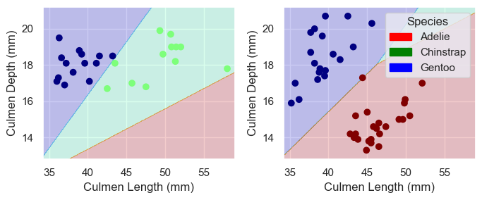

from folktables import ACSDataSource, BasicProblem, adult_filter
import numpy as np
STATE = "CT"
data_source = ACSDataSource(survey_year="2018",
horizon="1-Year",
survey="person")
acs_data = data_source.get_data(states=[STATE], download=True)In this blog post I will be training a model to predict income categories based on certain demographic characteristics and then auditing the model to asses its bias with respect to other demographic characteristics (in this case I will be assesing bias).
Loading and Preparing Data
In order to start working with the data, I first have to prepare it for training. In this blog post I will be using demographic data from the American Community Survey’s Public Use Microdata Sample (PUMS). This data is accesible thorugh the folktables package. I decided to work with Connecticut’s 2018 survey data, since that is the state I am from.
This is how that the first few rows of that data look:
acs_data.head()| RT | SERIALNO | DIVISION | SPORDER | PUMA | REGION | ST | ADJINC | PWGTP | AGEP | ... | PWGTP71 | PWGTP72 | PWGTP73 | PWGTP74 | PWGTP75 | PWGTP76 | PWGTP77 | PWGTP78 | PWGTP79 | PWGTP80 | |
|---|---|---|---|---|---|---|---|---|---|---|---|---|---|---|---|---|---|---|---|---|---|
| 0 | P | 2018GQ0000191 | 1 | 1 | 302 | 1 | 9 | 1013097 | 40 | 90 | ... | 82 | 39 | 38 | 81 | 0 | 38 | 0 | 0 | 36 | 34 |
| 1 | P | 2018GQ0000285 | 1 | 1 | 101 | 1 | 9 | 1013097 | 70 | 18 | ... | 69 | 134 | 7 | 70 | 6 | 68 | 141 | 68 | 132 | 145 |
| 2 | P | 2018GQ0000328 | 1 | 1 | 1101 | 1 | 9 | 1013097 | 17 | 54 | ... | 37 | 35 | 16 | 16 | 0 | 17 | 18 | 19 | 18 | 16 |
| 3 | P | 2018GQ0000360 | 1 | 1 | 905 | 1 | 9 | 1013097 | 47 | 18 | ... | 46 | 48 | 4 | 90 | 87 | 84 | 90 | 3 | 47 | 48 |
| 4 | P | 2018GQ0000428 | 1 | 1 | 903 | 1 | 9 | 1013097 | 35 | 96 | ... | 32 | 35 | 36 | 71 | 36 | 3 | 37 | 2 | 2 | 35 |
5 rows × 286 columns
Now I will select only the relevant features from the dataset, using the reccomendations from the paper provided in the blog’s instructions.
possible_features = [
"AGEP",
"COW",
"SCHL",
"MAR",
"OCCP",
"POBP",
"RELP",
"WKHP",
"SEX",
"RAC1P",
]
acs_data[possible_features].head()| AGEP | COW | SCHL | MAR | OCCP | POBP | RELP | WKHP | SEX | RAC1P | |
|---|---|---|---|---|---|---|---|---|---|---|
| 0 | 90 | NaN | 16.0 | 5 | NaN | 9 | 17 | NaN | 2 | 1 |
| 1 | 18 | 4.0 | 16.0 | 5 | 3550.0 | 36 | 17 | 18.0 | 2 | 1 |
| 2 | 54 | NaN | 17.0 | 5 | NaN | 9 | 17 | NaN | 1 | 2 |
| 3 | 18 | 1.0 | 19.0 | 5 | 4030.0 | 303 | 17 | 2.0 | 1 | 1 |
| 4 | 96 | NaN | 16.0 | 2 | NaN | 9 | 16 | NaN | 2 | 1 |
Data Observations
Now that the data is ready, I will define my problem using foklore’s BasicProblem class. Within the class I will create a target vector where 1 means the person makes avobe 50k/year and 0 means they make less than 50k/year. I also pass the data through a filter that removes any non-working adults.
from sklearn.model_selection import train_test_split
features_to_use = [f for f in possible_features if f not in ["PINCP", "SEX"]]
EmploymentProblem = BasicProblem(
features=features_to_use,
target="PINCP",
target_transform=lambda x: x > 50000, # Create target vector based on 50k/year treshold
group="SEX",
preprocess=adult_filter, # Filter data to only include working adults
postprocess=lambda x: np.nan_to_num(x, -1),
)
features, label, group = EmploymentProblem.df_to_numpy(acs_data) # Convert data to numpy array
#Train/test split
X_train, X_test, y_train, y_test, group_train, group_test = train_test_split(
features, label, group, test_size=0.2, random_state=0)Now I will convert the data to a pandas DataFrame to dig into describe some aspects of the data set.
import pandas as pd
# Convert data to pandas DataFrame
df = pd.DataFrame(X_train, columns = features_to_use)
df["group"] = group_train
df["label"] = y_train
# Calculate number of respondents
n_respondents = df.shape[0]
n_over50k = (y_train==1).sum()
print(f"Number of respondents used in model = {n_respondents}")
print(f"Percent respondents w/ income > 50k/year = {(n_over50k/n_respondents).round(4)*100}%")Number of respondents used in model = 15828
Percent respondents w/ income > 50k/year = 48.05%import seaborn as sns
import matplotlib.pyplot as plt
gender_labels = {1: "Male", 2: "Female"}
# Count the number of people in each group based on gender and income category
gb1 = df.groupby(["group", "label"]).size().unstack()
percentages = df.groupby(['group'])['label'].mean()
male_percent = percentages[1]
female_percent = percentages[2]
print(male_percent)
print(female_percent)
# Plot the bar chart using Seaborn
sns.set_style("whitegrid")
ax = gb1.plot(kind="bar")
# Set labels and title
ax.set_xlabel('Gender')
ax.set_ylabel('Number of Respondents')
ax.set_title('Number of Respondents in Each Group by Gender and Income Category')
# Set custom tick labels for gender
ax.set_xticklabels(['Male', 'Female'])
# Set legend
ax.legend(['< 50K', '> 50K'])
# Show the plot
plt.show()0.5481416812172611
0.41101152368758004
gender_labels = {1: 'Male', 2: 'Female'}
race_labels = {
1: "White",
2: "Black",
6: "Aisan",
**dict.fromkeys([3, 4, 5, 7, 8, 9], "Other"),
}
df['Race'] = df['RAC1P'].map(race_labels)
# Find percentage people in each gender and race group and check the percentage earning > 50k/year
gb = df.groupby(['group', 'Race'])['label'].mean().unstack()
print(gb)
# Plot the bar chart using Seaborn
sns.set_style("whitegrid")
ax = gb.plot(kind='bar')
# Set labels and title
ax.set_xlabel('Gender and Race')
ax.set_ylabel('Proportion of Respondents')
ax.set_title('Proportion of Respondents Earning > 50k per Year by Gender and Race')
# Set custom tick labels for gender and race
ax.set_xticklabels(['Male', 'Female'], rotation=45)
# Show the plot
plt.show()Race Aisan Black Other White
group
1 0.591667 0.308411 0.248945 0.586404
2 0.449721 0.290730 0.192225 0.438585
# Count the number of people in each group based on gender, race, and income category
group_counts = df.groupby(['group', 'Race', 'label']).size().unstack().fillna(0)
print(group_counts)
# Plot the bar chart using Seaborn
sns.set_style("whitegrid")
ax = group_counts.plot(kind='bar')
# Set labels and title
ax.set_xlabel('Gender and Race')
ax.set_ylabel('Number of Respondents')
ax.set_title('Number of Respondents Earning > 50k/year by Gender and Race')
# Set custom tick labels for gender and race
ax.set_xticklabels([(gender_labels[x[0]] + ', ' + x[1]) for x in group_counts.index], rotation=45)
# Set legend
ax.legend(['< 50K', '> 50K'])
# Show the plot
plt.show()label False True
group Race
1 Aisan 147 213
Black 370 165
Other 356 118
White 2750 3899
2 Aisan 197 161
Black 505 207
Other 374 89
White 3524 2753
Training Model
Now that my data is prepared, its time to train the model!
from sklearn.linear_model import LogisticRegression
from sklearn.pipeline import make_pipeline
from sklearn.preprocessing import StandardScaler
from sklearn.metrics import confusion_matrix
model = make_pipeline(StandardScaler(), LogisticRegression())
model.fit(X_train, y_train)
y_hat = model.predict(X_test)
acc = (y_hat == y_test).mean()
print(f"Overall ccuracy = {acc.round(8)}")Overall ccuracy = 0.76926965Now, I can test the acuraccy for male and female to see if there are any discrepencies. For the sake of this test I will be looking at binary gender, because that is the data available. Furthermore, because I am not sure how the data is collected, I do not know if the SEX feature refers to gender identity or biological sex.
acc_male = (y_hat == y_test)[group_test == 1].mean()
acc_fem = (y_hat == y_test)[group_test == 2].mean()
print(f"Male accuracy = {acc_male.round(8)}")
print(f"Female accuracy = {acc_fem.round(8)}")Male accuracy = 0.78973346
Female accuracy = 0.74779907As we can see, the acuracy for this model is significantly higher when predicting high i
Choosing Features
In order to choose the three features that could best classify by data, I used sklearn to implement cross validation using linear regression. I first found all possible combinations of one qualitative column and two quantitative columns and then calculated the scores of each combination. Lastly I found the combination with the highest score.
from itertools import combinations
from sklearn.model_selection import cross_val_score
from sklearn.linear_model import LogisticRegression
all_qual_cols = ["Clutch Completion_No", "Clutch Completion_Yes", "Sex_FEMALE", "Sex_MALE", "Island_Biscoe", "Island_Dream", "Island_Torgersen"]
all_quant_cols = ["Culmen Length (mm)", "Culmen Depth (mm)", "Flipper Length (mm)", "Body Mass (g)"]
scored_cols = []
LR = LogisticRegression(max_iter = 750)
# Find all posible combinations of one qual. column and two quant. columns
for qual in all_qual_cols:
qual_cols = [col for col in X_train.columns if qual in col ]
for pair in combinations(all_quant_cols, 2):
cols = qual_cols + list(pair)
# Falculate each combination's scores using linear regression and cross validation
scores = cross_val_score(LR, X_train[cols], y_train, cv=5)
scored_cols.append([cols, scores.mean()])
best_score = 0
# Find combination w/ highest score
for row in scored_cols:
if row[1] > best_score:
best_cols = row[0]
best_score = row[1]
print(best_cols, best_score)['Island_Dream', 'Culmen Length (mm)', 'Culmen Depth (mm)'] 0.988310708898944As we can see the Island_Dream, Culmen Length (mm), and Culmen Depth (mm) columns seem to do the best job at classifying the data. The image below by @allison_horst shows what the culmen length and depth refer to.

Training and Ploting Data (Logistic Regression)
Finally, I will train the logistic regression model on the data. In order to do so, I created a new column called Island_Dream_No which is the opposite of the Island_Dream column. That way I was able desplay all of the data using the plot_regions function defined here.
from plot_regions import plot_regions
import warnings
warnings.filterwarnings("ignore")
# Create column that is the opposite of "Island_Dream" in order to plot regions
not_Island_Dream = X_train[["Island_Biscoe", "Island_Torgersen"]].sum(axis=1)
X_train["Island_Dream_No"] = not_Island_Dream
cols = ["Culmen Length (mm)", "Culmen Depth (mm)", "Island_Dream", "Island_Dream_No"]
LR = LogisticRegression()
LR.fit(X_train[cols], y_train)
score = LR.score(X_train[cols], y_train)
warnings.filterwarnings("default", category=FutureWarning)
print(score)
plot_regions(LR, X_train[cols], y_train)1.0
Because the data is linearly seperable, we are able to reach a score of 1.0. It is also important to note that the data does not seem to be overfit. I think for this reason, linear regression without feature mapping is probably a good choice for a model as it does not “hug” the data. Furthermore, the data seems to be shaped in blobs that can be roughly seperated by linear decision boundries.
Test Data
Finaly, I am going to test to the model on our testing data. I loadd and prepared the data similarly to the training data, ran it thorugh the logistic regression model, then showed the score and plots of this data.
test_url = "https://raw.githubusercontent.com/middlebury-csci-0451/CSCI-0451/main/data/palmer-penguins/test.csv"
test = pd.read_csv(test_url)
X_test, y_test = prepare_data(test)
not_Island_Dream = X_test[["Island_Biscoe", "Island_Torgersen"]].sum(axis=1)
X_test["Island_Dream_No"] = not_Island_Dream
score = LR.score(X_test[cols], y_test)
print(score)
plot_regions(LR, X_test[cols], y_test)0.9852941176470589
With a score of roughly 98%, this model is very acurate. We can see that the model likely did not overfit to the training data beause it only incorrectly predicted one penguin that was just above the decesion line for it’s correct species.